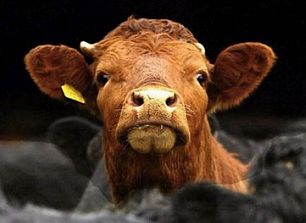

闻其声
冯冯
电视纪录片介绍，某地著名餐馆名肴，鲜炸活鱼，厨子把顾客指定的游水活鱼从水中捞出，迅速削鳞剜除肠肚，在鱼身上割出数道裂纹，然后，用湿水毛巾包住鱼头，一手执头，一手执尾，把鱼放入高热沸油中鲜炸，两分钟左右，就把鱼取出，放在大碟内，浇以各种佐料，上桌待客。可怜的鱼，全身已被沸油炸酥，尾巴却仍在摆动，鱼头也仍是活的，嘴巴不断 张合挣命，眼睛无助地睁望着人，老饕们飞筷夹取鱼身的肉进食，猛赞鲜美。这是常见的名馔美食之一！
另外的某一著名旅游湖畔，在一座著名的佛寺旁边，餐馆林立，争相以醉虾醉蟹为号召，活生生蹦跳的对虾，被放在热酒中略一泡浸，即可大快朵颐，名为醉虾！热酒一烫螃蟹，是为醉蟹，这也是美食之一！
某地风俗：一群族人，牵着一头山羊，走了好多里路，攀登山顶，举行祭天仪式，四个男子，抓着山羊四脚，肚子朝天，第五个人按住羊头，不让它挣扎，第六个人用利刀割开山羊咽喉，鲜血迸喷，山羊挣扎无效，血液汨汨流在盆子内，羊眼哀求地望着人，好久好久才断气，人们捧着一盆血，跪地祭天拜神，求福祉，求平安。
 某地名酒家，三分钟内，四个人，完成杀鸡，拔毛，斩切，油炸，炒煎，一鸡四只碟，上桌，鸡头仍是活的，嘴喙不住挣扎，眼睛垂泪，席上各人飞筷取食它的肉，鸡的神情，比上述的鱼更可怜，更痛苦，食客却无动于中。
某地名酒家，三分钟内，四个人，完成杀鸡，拔毛，斩切，油炸，炒煎，一鸡四只碟，上桌，鸡头仍是活的，嘴喙不住挣扎，眼睛垂泪，席上各人飞筷取食它的肉，鸡的神情，比上述的鱼更可怜，更痛苦，食客却无动于中。
这些自诩为美食文化，实在是野蛮 人的遗风！水浒传内描写梁山好汉，抓到人，绑在柱上，活生生刀剜心肝，新鲜下酒，就连花和尚鲁智深，也曾被绑在柱子，差一点被活剜心肝。二 十世纪初年，盗贼与军阀的士兵，也常有活吃人肝下酒的事，说是补肾壮阳。时至二十一世纪，也仍有不少外教寺庙，用活生生宰杀的三牲 祭祀，一般祭祖也都用三牲，拜神用活鸡活杀取血，令人发指！
设或畜牲动物成精作怪，抓到活人，割喉茹血，或如狮虎熊狼之活生生咬噬活人！如鳄鱼之活噬人畜，那又如何？弱肉强食，是生物界的现象，万物之灵的人类，却仍然保留残酷杀生的野性！吃活生生的动物！无视于它们的被生吃的痛楚与痛苦！要嘴馋爱吃肉，何不把动物杀死了烹调才吃？
有些教派，不戒荤，不戒杀生，满口慈悲，日诵夜念，又跪又拜，攀登高山峻岭，三步一拜，祈求得到来世福祉，对人慈悲，却对畜牲残酷屠杀，不畏因果，毫无恻忍之心，这样也能来世成圣成佛？佛教重“戒杀生”，又重视因果，佛经本本教人守戒，没说杀生也可成佛。
念多少千万遍经咒，能消杀孳吗？有人认为可以，恐怕是曲解了 佛教原旨吧？固然，外教是不管的，杀羊杀牛杀马，乃至杀人都可以升天堂，那是外教外道，不是佛教，谁对谁错？看你从什么立场来判断，不信佛，不信因果，至少也该信孟夫子“闻其声，不忍食其肉”之语吧？不是狂想：假如动物把人活吞生噬，像电影“侏罗纪公园”中的恐龙咬噬活人，人才感见痛楚吧！
原载《佛网》网站
2000 年 ── 2002 年